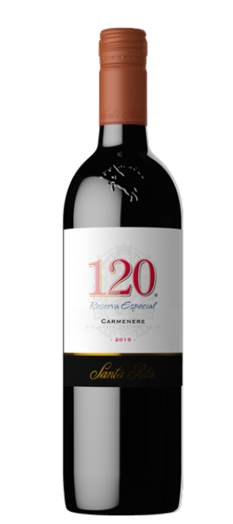
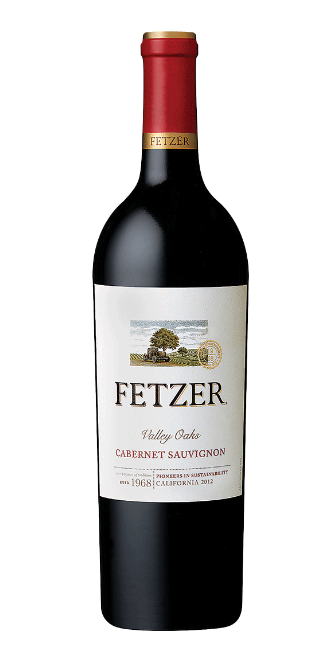
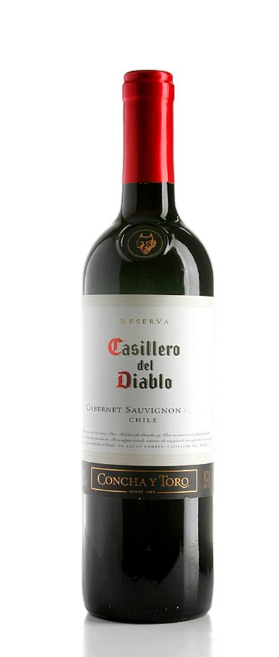

-------------------------------------------------------
-------------------------------------------------------
-------------------------------------------------------
3 Low Cost High Value Red Wines
If you are looking for wine that is low in cost and high in value, we have found 3 that fit the description perfectly.
1. Santa Rita’s 120 Carménère

While Carménère is not one of the most popular types of wine out there it certainly a solid bodied red that is the pride of Chile. What makes Santa Rita’s Carménère stand out from the crowd is its uniquely pleasant mouthfeel characterized by a deep fruitiness. Is it sweet? Yes, but still elegant and with a strong nose full of red fruit and crisp spices.
Especially recommended for the budding red wine enthusiast looking to diversify their palate, the 120 Carménère evokes nostalgia for Chilean culture through its taste as well as the ‘120’ series name, which is titled after Doña Paula Jaraquemada who hid 120 Chilean revolutionaries during their war for independence from Spain.
2) Fetzer Valley Oaks Cabernet Sauvignon

With grapes grown in the valleys of Mendocino County, Fetzer’s Valley Oaks offers delightful black currant aromas of higher priced Cabernet Sauvignons at an extremely affordable cost. There is plenty to like about this wine with its rich body and smooth finish. Owned by Latin American wine giants Concho y Toro, Fetzer has created a lovely Cabernet Sauvignon in the foothills of Northern California.
3) Casillero del Diablo Reserva
Cabernet Sauvignon

Described by the wine maker as “Medium bodied with silky tannins” the Casillero del Diablo Reserva is yet another solid bet for those looking for value at a modest price. Rich in cherry flavors, this Cabernet Sauvignon sits beautifully in a glass with its dark red color foreshadowing its great taste just by its appearance alone.
Finding a solid bottle of red wine at good price is not always the easiest thing, but these three reds will not do you wrong. These three wines give you some of the best value at an extremely affordable price.